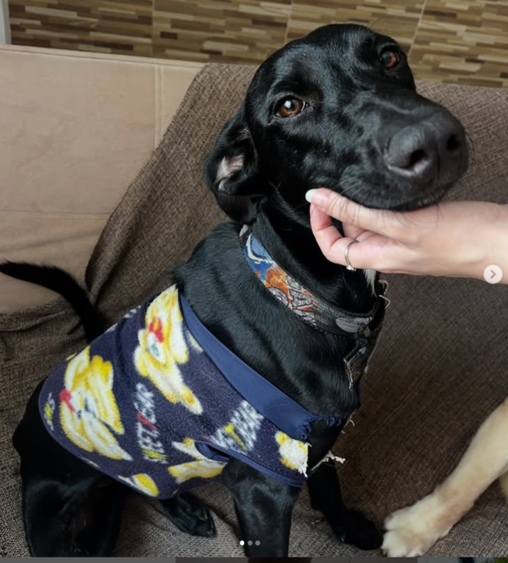
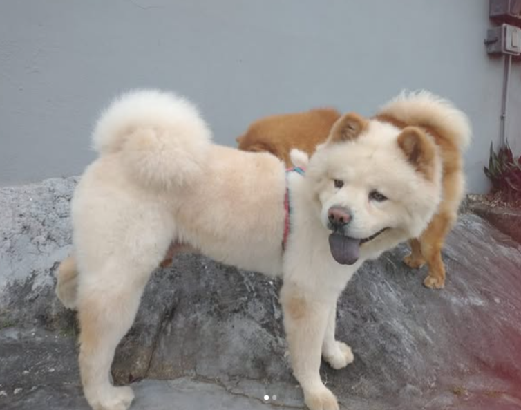
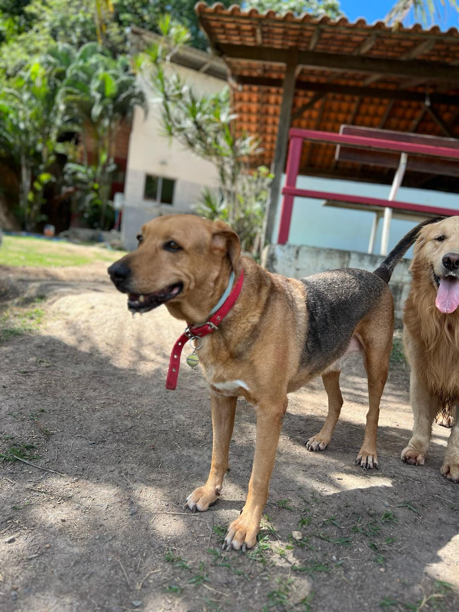
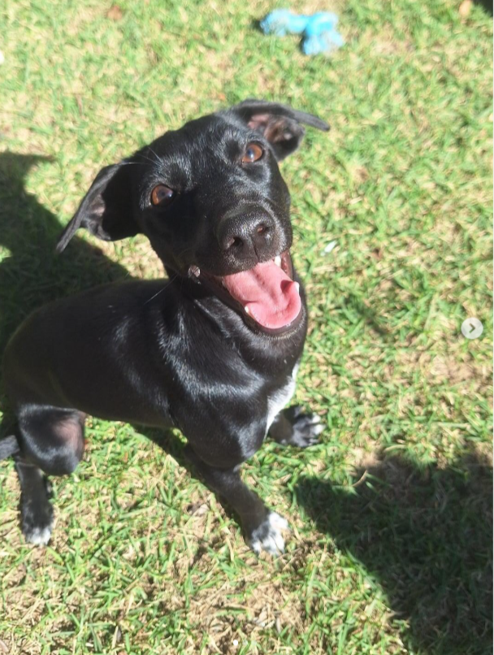
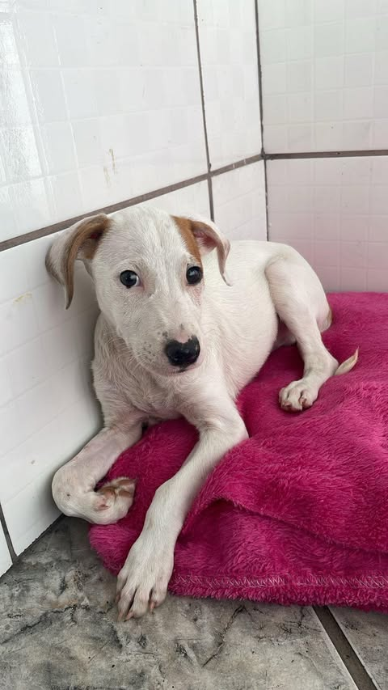
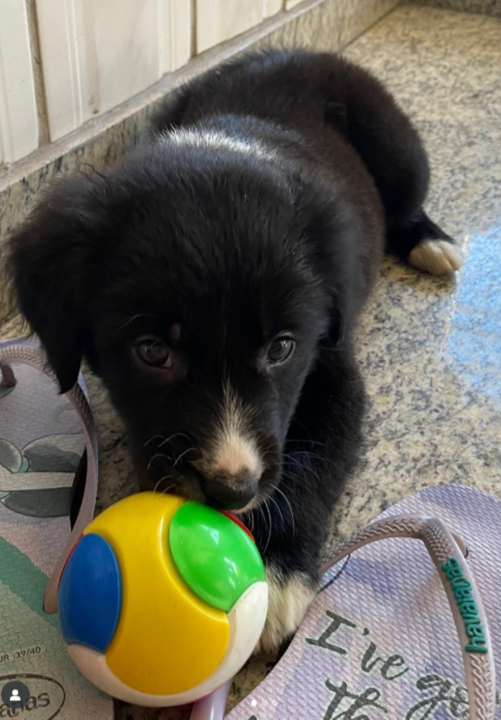

Nossos Aumigos








INSTITUTO AUMIGOS DO LIVRO
Promovendo o cuidado responsável e ético com os animais e o meio ambiente.
O que os livros têm a ver com o resgate de animais? O trabalho do Aumigos dos Livros acontece a partir da venda de livros usados. Com esse dinheiro, a instituição consegue bancar os lares temporários e até ajudar outras instituições, protetores e grupos de ração. O instituto possui pontos de coleta espalhados na Grande Vitória, em clínicas veterinárias parceiras. Em alguns casos, dependendo da quantidade de livros, eles também se organizam para buscar na casa de quem quer fazer a doação. É fundamental que os livros doados estejam em bom estado. Depois, os livros são vendidos em feiras de animais e pelas redes sociais. A sede funciona apenas para guardar e organizar as doações, eles não têm condições para abrigar animais. Tanto cachorros como gatos são resgatados. Hoje, são 14 animais em lares de voluntários, todos cachorros.

A professora Magali Gláucia idealizou o Instituto Aumigos de Livros em 2018. Inicialmente, a ideia surgiu de uma forma inesperada. “Comprei meu cachorro pela internet e, depois, quando percebi o tipo de comércio que era feito, me arrependi muito e tentei fazer algo para me redimir”.
“Inicialmente separei vários livros que tinha e vendi na minha própria rede social. Em uma noite fiz R$ 700 e enviei para um projeto de proteção aos animais”, lembrou Magali.
Ao perceber que a iniciativa tinha dado certo, a professora começou a pedir ajuda aos alunos, para que doassem livros. Por meses, Magali continuou ajudando o mesmo projeto até que, ela própria, fez o seu primeiro resgate. O 'sortudo' foi o Marrone, um cachorrinho que acabou sendo adotado pela mãe dela.
Com o passar do tempo, uma rede social foi criada e o Aumigo de Livros foi crescendo. Os alunos da Magali foram os maiores incentivadores e alguns viraram voluntários do grupo. Até fevereiro de 2023 mais de R$ 422 mil foram arrecadados para a causa animal, tudo catalogado e com contas prestadas. Mais de 300 animais já passaram pelos lares temporários e ganharam novas famílias. Atualmente, são cerca de 20 voluntários ativos participando do grupo. A voluntária Maíra Loss explicou que toda ajuda é bem-vinda para que o projeto se mantenha.
Cada adoção realizada, cada animal resgatado, cada livro doado, cada doação, cada patrocinio e cada campanha educativa, é um passo rumo a uma sociedade mais ética, justa e sustentável, conforme os valores de ética organizacional e responsabilidade social.
Bem-vindo ao nosso espaço de aprendizado e consciência! O Espaço Educativo do Aumigos de Livros é um espaço criado para compartilhar conhecimento, inspirar atitudes sustentáveis e fortalecer a relação entre seres humanos, animais e o meio ambiente.
Acreditamos que educar é transformar, e que pequenas ações diárias podem gerar grandes mudanças sociais e ambientais.
Aqui você encontra orientações sobre alimentação saudável, higiene, vacinação, castração e bem-estar animal. Nosso objetivo é incentivar a adoção responsável e garantir que cada pet viva com dignidade e amor.
Incentivamos práticas simples de reciclagem e reaproveitamento, mostrando como materiais usados podem ser transformados em itens úteis para os animais, como camas, brinquedos e comedouros sustentáveis. Essas ações reduzem o desperdício e fortalecem a sustentabilidade socioambiental.
O consumo responsável incentiva escolhas éticas e ecológicas — desde a compra de produtos pet sustentáveis até a redução do uso de plásticos. Agir eticamente é reconhecer nossa responsabilidade com o coletivo e com o planeta.
O cuidado com os animais reflete o cuidado com nós mesmos. Promovemos uma cultura de respeito, empatia e solidariedade, valores que fortalecem a convivência harmoniosa entre pessoas, animais e natureza.






 Reportagem sobre o Instituto no G1
Reportagem sobre o Instituto no G1